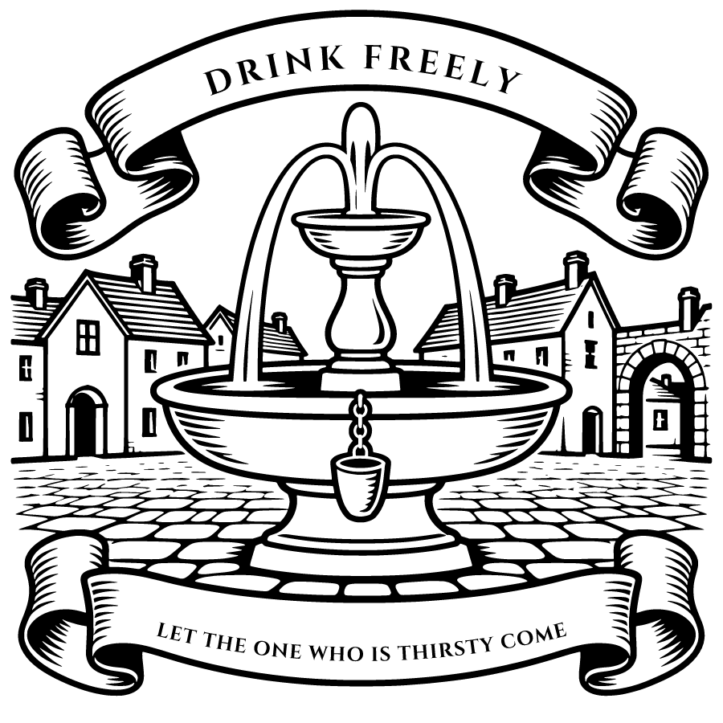

Common Weal Press
The Christian Inheritance. Freely Given.
This edition is published by Common Weal Press and dedicated to the public domain under the Creative Commons CC0 1.0 Universal Public Domain Dedication. You are free to copy, distribute, modify and use it for any purpose, without asking. creativecommons.org/publicdomain/zero/1.0

Freely you have received; freely give. — Matthew 10:8
Printed copies are sold at the cost of printing: no revenue or royalty is made from them.
Set from Henry Beveridge's translation of John Calvin's Institutio Christianae Religionis (1559), first published by the Calvin Translation Society (Edinburgh, 1845). The text is the Christian Classics Ethereal Library's, checked against the 1845 printing.
This is volume 5 of six: Book I is volume 1, Book II volume 2, Book III volumes 3 and 4, and Book IV volumes 5 and 6.
Free ebooks, PDFs and at-cost printed copies:
Corrections and questions: books@commonwealpress.org